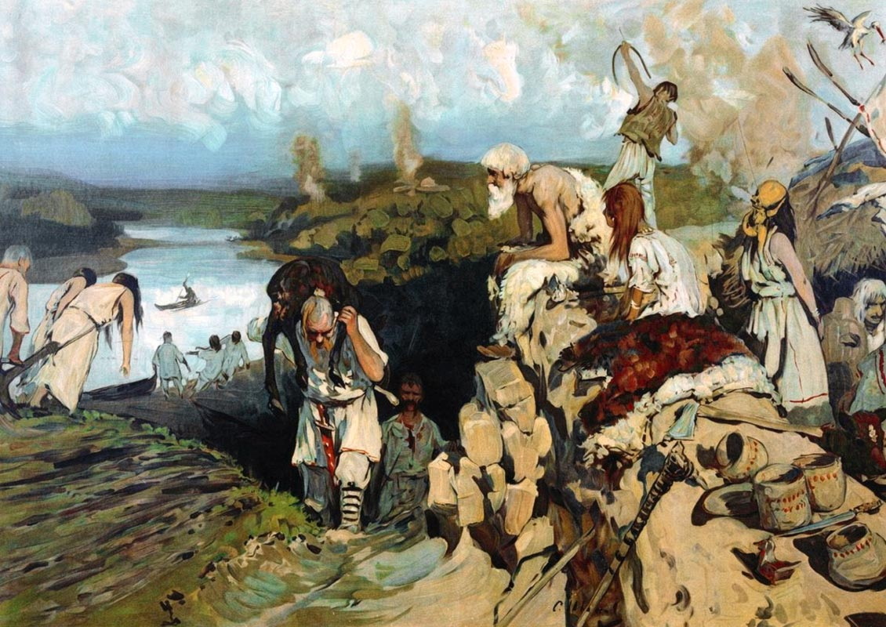

2026 Славянский этногенез.
Славянский этногенез

Введение в славянский этногенез
Славянский этногенез — это процесс формирования и становления славян как этноса. Этот процесс охватывает несколько тысячелетий и включает в себя множество аспектов: культурных, языковых, социальных и географических. Этногенез славян был многогранным и долгим, включающим различные исторические эпохи и влияния других народов, что сделало славянский этнос одним из крупнейших в Европе и мире.
Мифы и реальность: откуда пришли славяне?
Происхождение славян остается одной из самых обсуждаемых тем в исторической науке. Существует несколько гипотез о том, откуда пришли славяне:
- Теория автохтонности утверждает, что славяне всегда жили на территории Восточной Европы и не были мигрировавшими народами.
- Теория индоевропейского происхождения предполагает, что славяне являются частью более широкой индоевропейской семьи народов, которая сформировалась на территориях, включая южную и восточную Европу.
- Современные исследования подтверждают, что славяне, как и многие другие народы, были результатом длительных миграций и смешения различных этнических групп.
Территория расселения славян в древности
Прародина славян, или территория их первоначального расселения, находилась в Центральной и Восточной Европе. Это обширная зона, включающая современные Польщу, Украину, Белоруссию, Чехию и Словакию. Именно на этих землях начали формироваться древнеславянские племена, которые позже начали расселяться по всей Европе, а также в Азию.
Язык и культура славян
Славянский язык является основой для множества современных славянских языков. В процессе этногенеза произошло разделение на три группы славянских языков: западнославянские, восточнославянские и южнославянские. Развитие письменности, а также распространение христианства сыграло важную роль в становлении культурных традиций славян. Религиозные обряды, народные праздники и обычаи, такие как Рождество, Масленица, и Пасха, сохранились до сих пор.

Исторические источники и археологические находки
Для восстановления картины славянского этногенеза ученые используют различные исторические источники, такие как археологические раскопки, летописи, древние карты и надписи. Археологические находки, такие как курганы, поселения и артефакты, помогают восстановить образ жизни древних славян и понять, как они взаимодействовали с соседними народами.

Основные этапы формирования славянских народов
Славяне прошли несколько ключевых этапов в своем развитии:
- В бронзовом веке на территории Восточной Европы начали формироваться праславяне, общность, из которой позднее выделились отдельные славянские группы.
- В периоде раннего Средневековья славяне начали расселяться по территории Европы, что привело к образованию различных народов: восточных (русские, украинцы, белорусы), западных (поляки, чехи, словаки) и южных (болгары, сербы, хорваты).
- Влияние соседних народов, таких как германцы, тюрки и другие, сыграло немалую роль в этом процессе.
Славянские мифы и верования
Древнеславянская мифология была насыщена различными богами и духами природы. Славяне почитали такие божества, как Перун (бог грома), Велес (бог подземного мира) и Даждьбог (бог солнца). Ритуалы и обряды были важной частью жизни славян, и многие из них сохранились в виде народных праздников и традиций, например, в виде обрядов на Купалу или святках.
Современные славяне: наследие прошлого
Сегодня наследие древних славян проявляется в культурах современных славянских народов. Язык, традиции, фольклор и праздники сохраняются и передаются из поколения в поколение. В то же время, современные славянские народы активно развиваются, сохраняя связь с историей, но адаптируя её к новым условиям и глобализированному миру.
Заключение
Славянский этногенез — это сложный и многогранный процесс, который длился тысячи лет. В нём приняли участие не только славяне, но и множество соседних народов, а также географические и культурные факторы. Славянский этнос сыграл важную роль в истории Европы и продолжает влиять на современный мир, несмотря на изменения в политических, социальных и культурных контекстах.